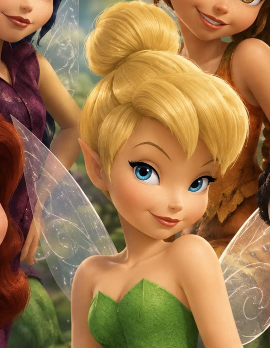
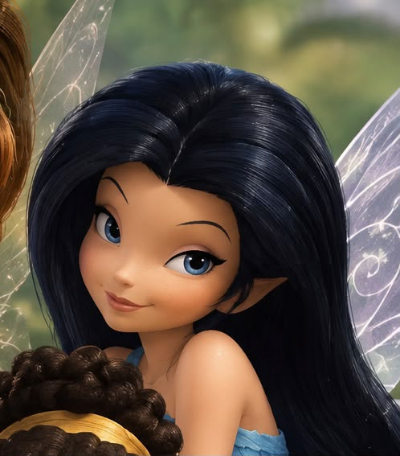
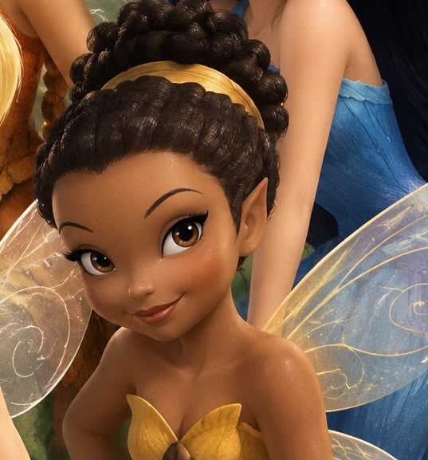
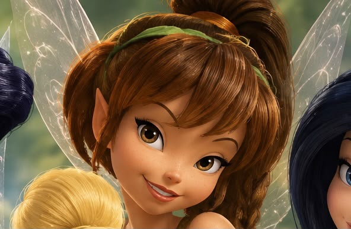
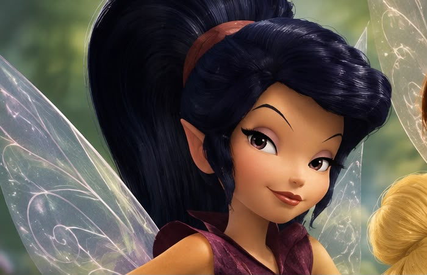
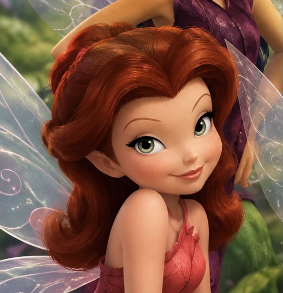

Tinker Bell
Uma fada curiosa, inteligente e corajosa que adora inventar coisas.
 Mundo de Tinker Bell
Mundo de Tinker BellARQUIVO DE FADAS
Conheça os personagens que fazem parte do mundo mágico de Pixie Hollow
PERSONAGENS PRINCIPAIS

Uma fada curiosa, inteligente e corajosa que adora inventar coisas.

Uma fada da água tranquila, gentil e muito amigável.

Uma fada da luz responsável, cuidadosa e um pouco preocupada.

Uma fada dos animais divertida, carinhosa e aventureira.

Uma fada rápida, competitiva e bastante confiante.

Uma fada das flores vaidosa, elegante e apaixonada pela natureza.